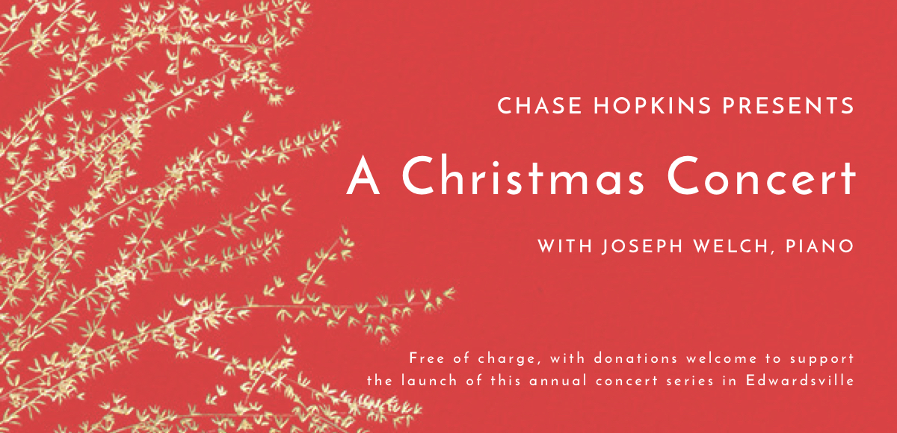
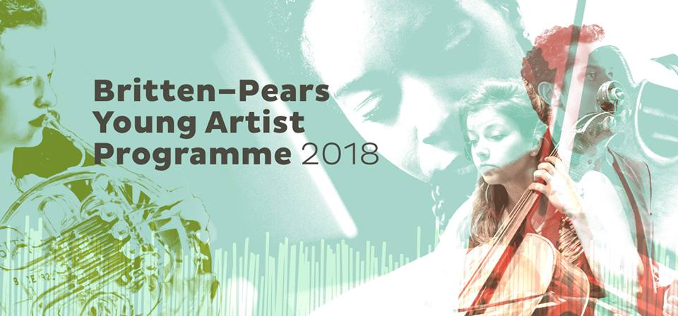
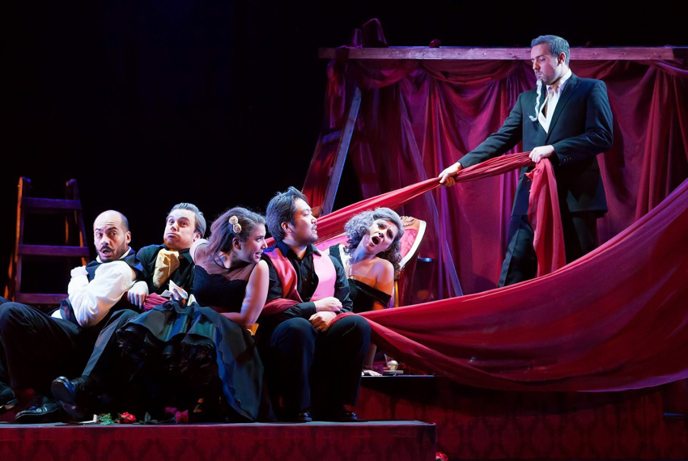
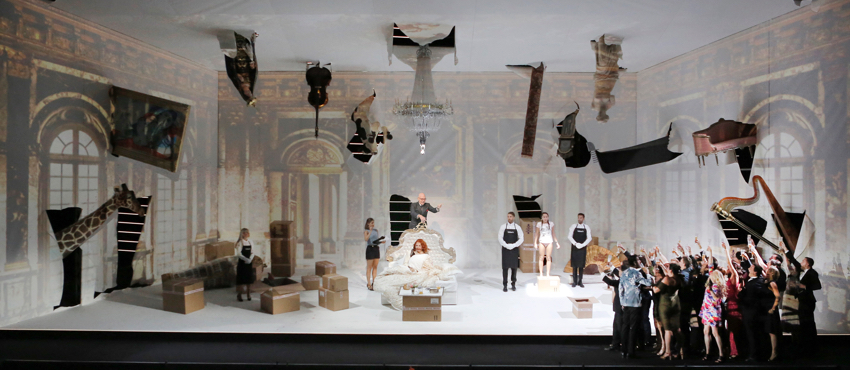
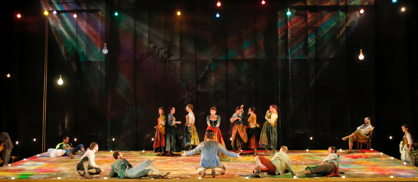
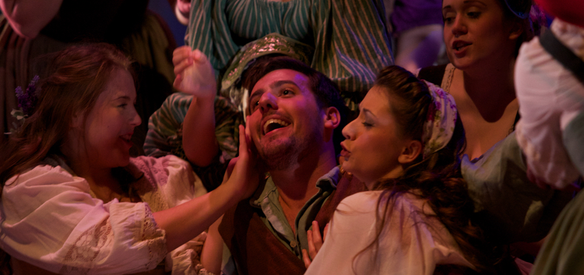

Audio samples
Upcoming engagements
"Oronte" in Handel’s 'Alcina,' United Kingdom
November 30, 2017 at 7:30pm
The performance will take place as a part of Bob Boas' "Mansfield Street Series." The concert supports a young artists fundraiser for the Two Moors Festival.
Tickets: £50, which includes a £20 donation + drinks and canapés. To book, please email Bob Boas at boas22m@btinternet.com or call him on 020 7436 0344 with your request. Bob does not issue tickets but you should get confirmation that you are booked in. More information available here about the Two Moors Festival.
Location: 22 Mansfield St, Marylebone, London W1G 9NR, UK
Learn more: Two Moors Festival + HandelsAlcina.com
Christmas Concert at St. Andrews Episcopal Church, Edwardsville, Illinois
Friday December 22, 2017 at 7:30pm

Free concert of Holiday Classics and Christmas Carols. Donations greatly appreciated to support the launch of a new classical music concert series to be established in Edwardsville, Illinois.
Location: 406 Hillsboro Ave, Edwardsville, IL 62025
Donations accepted via PayPal: Donate Here
Questions: Please email me directly at chasehenryhopkins@gmail.com.
"Septimus" in Handel’s 'Theodora'
Britten-Pears Young Artists Programme, United Kingdom
March 23 to April 1, 2018

Britten-Pears Young Artists Programme 2018
Conducted by Christian Curnyn with direction and masterclass from Sarah Connolly.
The Britten–Pears Young Artist Programme was founded over 40 years ago by Benjamin Britten and Peter Pears to provide high-level performance training for the world’s best emerging professional musicians. Renowned British Handelians Sarah Connolly and Christian Curnyn prepare this dramatic oratorio in masterclasses before presenting a concert performance as part of Snape Maltings' Easter Weekend programme.
Final Concert: March 31, 2018
Learn more about Britten–Pears
Recent performances
Wexford Festival Opera, Ireland
October 19 to November 5, 2017

Wexford Festival Opera 'La Scala di Seta' October 2017
"Dormont" in ‘La Scala di Seta,’ by Giacomo Rossini.
Read the reviews:
"Chase Hopkins' Dormont was a strong, convincing presence...[and] the finale scene, which saw the entire cast tied up with the silken ladder before the wriggled free from Dormont's clutches and accusations, bubbled nicely." — OPERA TODAY
"Chase Hopkins legt den Dormont recht hektisch an und überzeugt mit lyrischem Tenor." — ONLINE MUSIK MAGAZIN
"Chase Hopkins, an American tenor, played the part of Dormont, producing a thoughtful and disciplined performance." — OPERAWIRE
'Margherita' by Jacopo Foroni, chorus.
Conducted by Timothy Myers and directed by Michael Sturm.
'Risurreszione' by Franco Alfano, chorus.
Conducted by Francesco Cilluffo and directed by Rosetta Cucchi.
Festival of Aix-en-Provence, France
July 3 to 22, 2017

Festival of Aix-en-Provence 'The Rakes Progress' 2017
'The Rake’s Progress' by Igor Stravinsky, chorus.
Conducted by Daniel Harding and directed by Simon McBurney.
Festival of Aix-en-Provence 'Don Giovanni' 2017
'Don Giovanni' by Wolfgang Amadeus Mozart, chorus.
Conducted by Jérémie Rhorer and directed by Jean-François Sivadier.
"Eisenstein" in Strauss’ 'Die Fledermaus,' United Kingdom
May 2017
Directed by Lee Blakeley and conducted by Tim Dean.
Watch a recap of the performance
Read the reviews:
"Chase Henry Hopkins was a splendidly glaikit cuckolded Tory MP as Eisenstein" (5 Stars) — THE HERALD
"American tenor Chase Henry Hopkins was a convincingly bluff Eisenstein" (4 Stars) — BACHTRACK
About
Biography

‘L’elisir d’amore’ 2015
American tenor, Chase Henry Hopkins was born in St. Louis and completed training with Scott Johnson and Paul Plummer as a member of the Royal Conservatoire of Scotland’s Alexander Gibson Opera School. Previously, he trained with Rosemary Joshua and Olivier Lallouette at the Dutch National Opera Academy in Amsterdam. Chase completed his Masters in music at the Royal Northern College of Music with Lynne Dawson and Nick Powell in England and his Bachelors at Northwestern University with Karen Brunssen in Chicago.
Previous operatic roles include Eisenstein Die Fledermaus, Don Ottavio Don Giovanni, Nemorino L'elisir d'amore, Don Basilio Le Nozze di Figaro, Jupiter Semele, Oronte Alcina, and Telemaco Il Ritorno d'Ulisse in Patria.
Professional chorus work includes Aix-en-Provence (France), The Wexford Festival (Ireland), The Grange Park Opera (England), the Zurich Tonhalle (Switzerland), and The Castleton Music Festival (US).
Additionally, concert repertoire includes Mozart's Requiem and Mass in C minor, Haydn's Nelson Mass, Monteverdi's Vespers 1610, and Handel's Alexander's Feast.